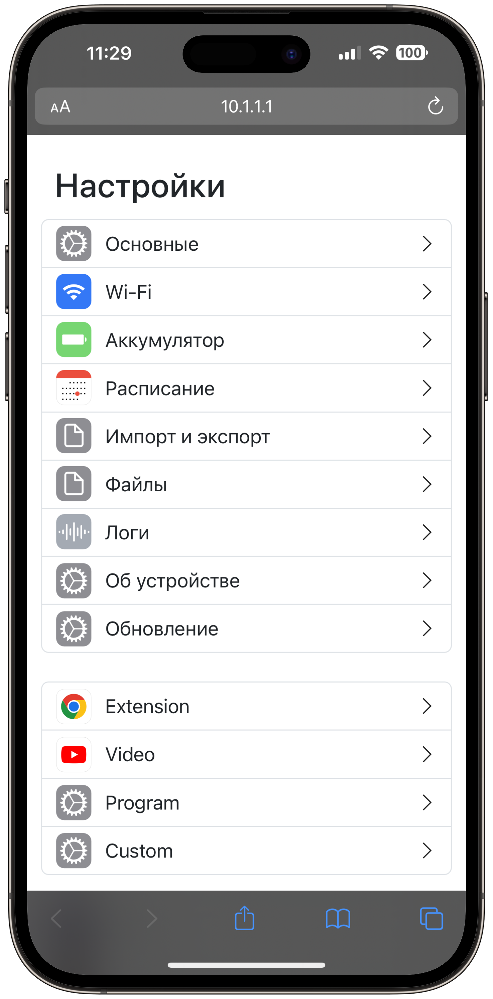
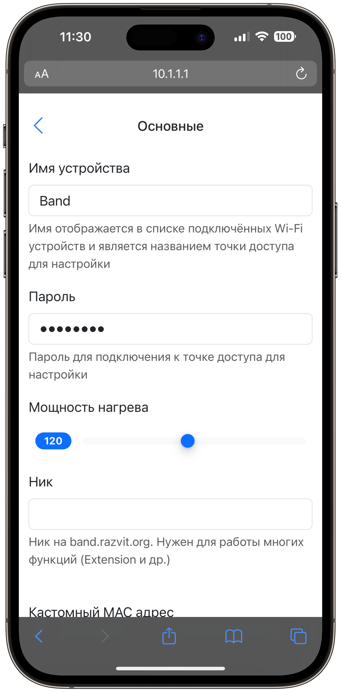
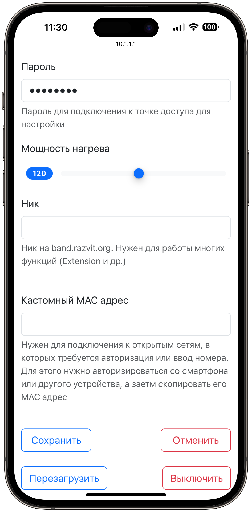
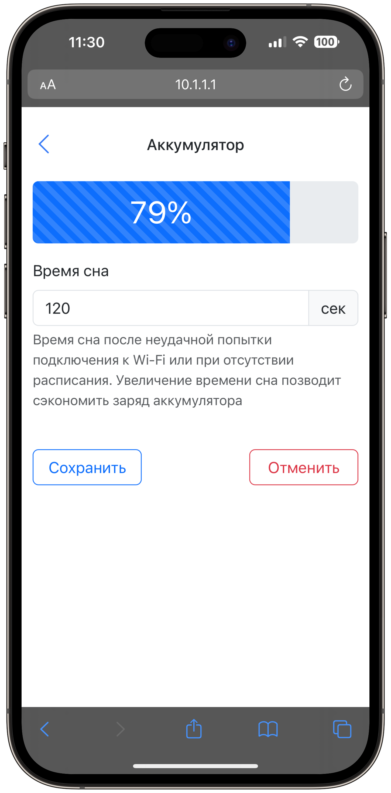
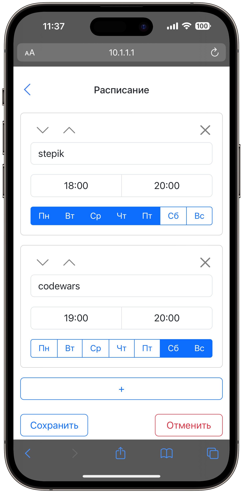
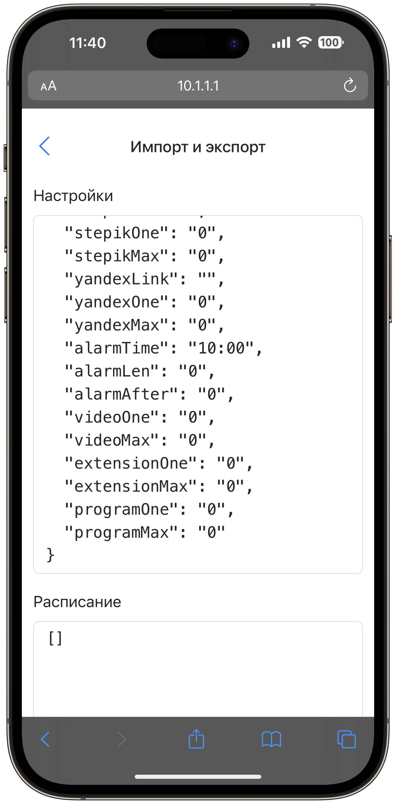

Туториал по использованию браслета
👋 Введение
❗ Проблема
В современном мире каждый сталкивается с проблемой лени и прокрастинации. Люди часто получают удовольствие от того, что несёт им вред. Я же хочу сделать так, чтобы лень не мешала никому делать то, что для него действительно важно, учиться, развиваться и становится лучше.
✅ Решение
Я разработал браслет для повышения продуктивности и победы над ленью. Браслет настраивается с помощью удобного веб-интерфейса. После настройки подключается к интернету через Wi-Fi. Подключение к API различных сервисов позволяет контролировать выполнение многих задач. Если задача не выполняется, то браслет начинает нагреваться, тем самым стимулируя пользователя к работе или учёбе. Устройство создано на основе чипа ESP32, что позволяет пользователю загружать собственный Arduino код и применять его во множестве различных сценариев.
🔋 Зарядка
Браслет заряжается с помощью USB-C. Процесс зарядки можно увидеть на http://10.1.1.1/battery (описано далее).
🕹️ Включение и кнопки

У браслета есть 3 кнопки утопленные в корпус. Чтобы их нажать, нужно использовать зубочистки или иголки. Возьми сразу две, т.к. нужны обе для некоторых комбинаций.
⚡ Включение / перезагрузка - нажми reset.
⚙️ Режим настройки - зажми prog и нажми reset. Светодиоды начнут переливаться радугой.
🔌 Выключение - зажми boot и prog, когда устройство включено. Загорится красный светодиод и плавно погаснет.
💾 Режим загрузки прошивки - зажми boot и нажми reset.
🪢 Регулировка ремешка
Инструкция по регулировке ремешка нарисована на коробке. Для регулировки потребуется маленькая плоская отвёртка идущая в комплекте.
⚙️ Основные настройки
Для настройки не нужно скачивать никакие приложения. Браслет можно настроить с помощью смартфона, планшета, ноутбука и любого другого устройства, которое способно подключаться к Wi-Fi и открывать сайты.
Сначала нужно включить режим настройки. Зажми кнопки prog и нажми reset. Светодиоды начнут переливаться радугой.

Браслет создаёт Wi-Fi точку, к которой нужно подключиться, чтобы его настроить. После ввода имени сети и пароля (по умолчанию Band и 12345678), нужно зайти в браузер и перейти по адресу http://10.1.1.1. В результате откроется главная страница настроек.
Затем нужно нажать на интересующую вкладку, далее будет описана каждая из них.
Внизу у большинства вкладок находятся кнопки Сохранить и Отменить, благодаря которым заполненная форма либо отправляется на браслет и сохраняется на нём, либо изменения отменяются, то есть остаются значения, которые были на браслете.

🏠 Основные
Во вкладке можно выбрать имя для браслета и пароль, которые будут использоваться для подключения к настройкам.

Важно
Выставление безопасного уровня нагрева является твоей задачей!
Также можно выставить подходящий лично тебе уровень нагрева от 0 до 255 (это не градусы, а мощность ШИМ, где 0 - нет нагрева, а 255 - максимальный нагрев). (Для регулирования мощности нагревателя используется ШИМ (Широтно Импульсная Модуляция). Этот метод работает за счёт пульсирующего включения и выключения напряжения. Плата способна генерировать ШИМ с 0 до 255, где 0 - полностью выключено, а 255 - сигнал подан постоянно.)

Внизу так же есть кнопки для перезагрузки и выключения браслета.
📡 Wi-Fi
Во вкладке Wi-Fi нужно ввести данные сети, к которой будет подключаться браслет.

Если хочешь подключиться к открытой сети, то оставь поле для пароля пустым.
Можно ввести сразу несколько сетей, а браслет будет подключаться к сети с наилучшим сигналом, что полезно, если нужно использовать браслет в разных помещениях.
Можно использовать режим модема, так же как обычный Wi-Fi, но это не всегда удобно. Режим модема на iPhone автоматически выключается, если к нему никто не подключен, что не позволяет его использовать для браслета. Android смартфон будет быстрее разряжаться.
Старайтесь находиться как можно ближе к источнику Wi-Fi, чтобы браслет работал корректно.
🔋 Аккумулятор
Во вкладке аккумулятор можно посмотреть текущий заряд аккумулятора и установить время сна после неудачной попытки подключения к Wi-Fi или при отсутствии расписания. Увеличение времени сна позволит сэкономить заряд аккумулятора.

⏰ Расписание
Во вкладке расписания вводятся правила, по которым будет действовать браслет в течении недели.
Для создания нового правила нужно нажать на кнопку с плюсом.
Нужно выбрать один или несколько режимов работы (если включены, например Stepik и Codewars, то достаточно выполнять один из них). В некоторых случаях это бывает очень полезно, когда нужно, например, учиться на Stepik и повторять информацию в Anki одновременно.
После чего нужно выбрать время начала и завершения правила и выставить дни недели, в которые оно будет работать.
Также можно менять правила местами с помощью стрелочек вверх и вниз или удалить, используя крестик. Расположение правил имеет значение, т.к. они проверяются сверху вниз, пока не будет найдено первое подходящее по времени и дню недели правило.
Если выбрать Sleep, то браслет будет отправляться в глубокий сон пока не закончится время правила.

При нажатии кнопки Сохранить на браслет отправляется POST запрос с JSON, в котором хранится информация о расписании.
💾 Импорт / экспорт
Настройки можно сохранить в формате JSON, а затем загрузить обратно на браслет, что очень полезно при обновлении файловой системы и в других ситуациях, когда настройки могут пропасть.
